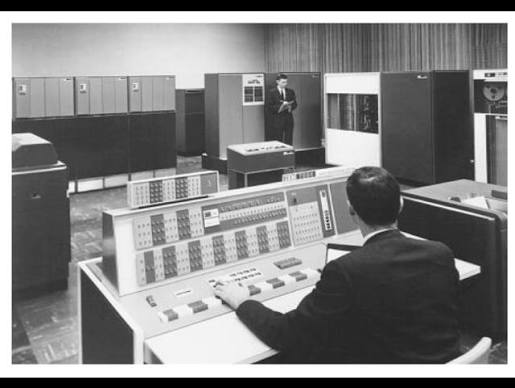
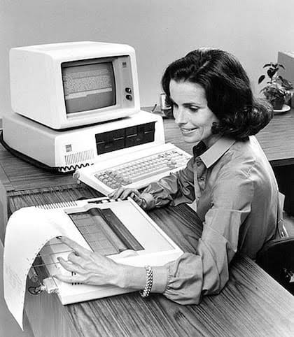
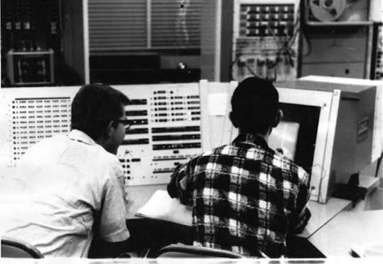
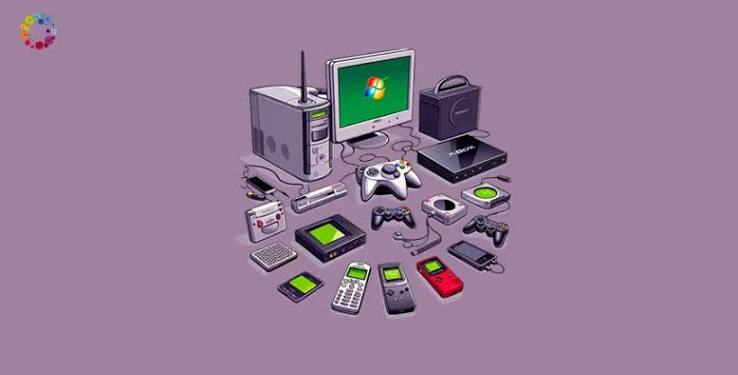
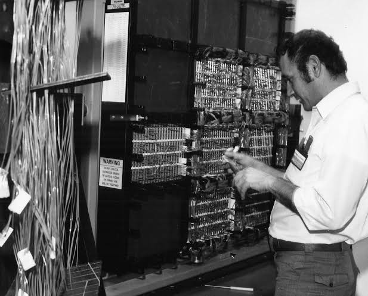

Evolución Tecnológica de las TIC
Las Tecnologías de la Información y la Comunicación han transformado la forma en que las personas se comunican, almacenan información y desarrollan procesos digitales. Aunque podrìa hablarse de muchas tecnolo`gias previas, la mayoria de los especialistas coinciden en que los dos grandes progresos iniciales fueron el telègrado y el telèfono, inventos que aparecieron durante el siglo XIX. A continuación se presenta una línea del tiempo con algunos de los acontecimientos más importantes.
Línea del Tiempo





Década de 1970
El auge de los Mainframes
En esas décadas comenzaron a crearse los primeros ordenadores, aunque con enormes dimensiones y en un formato experimental. La posibilidad de desarrollar y utilizar transistores en los ordenadores incrementó su potencia. Durante esta década surgieron los grandes computadores utilizados por gobiernos, universidades y empresas para procesar grandes cantidades de información.
- Mainframes IBM
- Procesamiento centralizado
- Primeras redes de comunicación